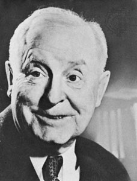

They have won 2 grammies, one for Boss Of Me, and one for their children's album Here Come The 123's. Their album Flood has been certified platinum. They also performed the theme song for The Daily Show during the Jon Stewart years. They are a large inspiration for alternative rock artists, such as OK Go, Barenaked Ladies, Jonathan Coulton, and many more.
| Member Name | Instrument(s) |
|---|---|
| John Linnell | Accordion, keyboard, clarinet, saxophone, vocals |
| John Flansburgh | Vocals, electric guitar, acoustic guitar, The Stick |
| Marty Beller | Drums, percussion |
| Dan Miller | Electric guitar, acoustic guitar |
| Danny Weinkauf | Bass guitar |

Click on the dog to find out your dog's age in human years!
John Flansburgh
